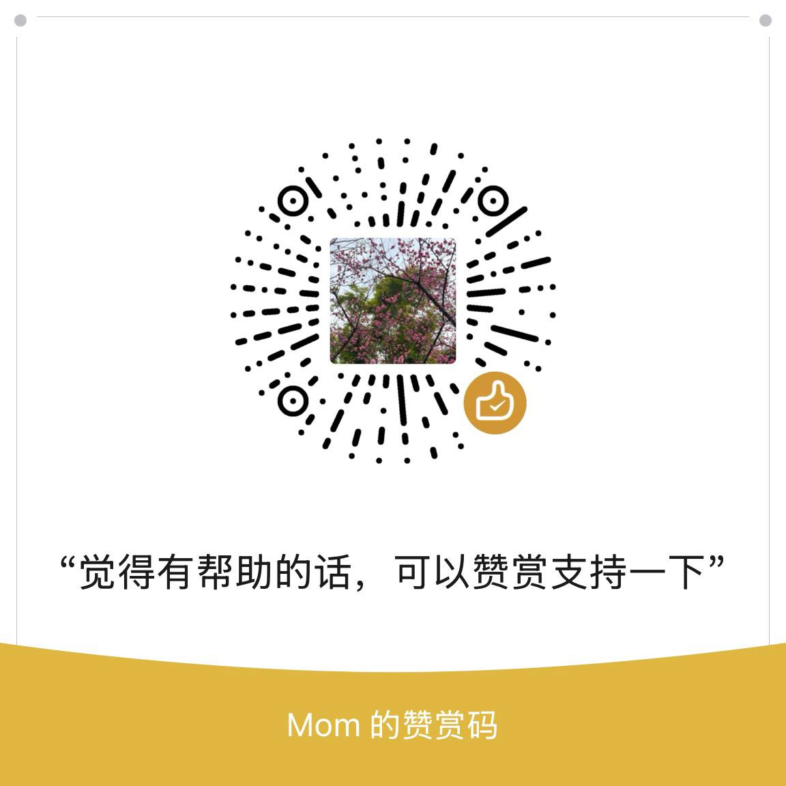

LDPC 消息传递译码可视化
信道先给每个比特一个带噪声的初始置信度，校验方程再把“必须满足的约束”注入系统。变量节点和校验节点反复传消息，直到所有校验都通过。
工厂测试：扫描 Vref 生成 VT 分布曲线
ΔVref=-
| 区间 | Vref 范围 (V) | 写1 Cell 数 | 写1 PDF | 写0 Cell 数 | 写0 PDF | LLR |
|---|
Vref (V)；纵坐标是累计 Cell 数 count(VT ≤ Vref)，单位是个；测试步进 ΔVref=-。相邻 CDF 相减 = 区间 Cell 数；区间 Cell 数 / 总 Cell 数 = 区间概率；区间概率 / ΔVref = PDF 概率密度 (1/V)。LLR = log(PDF0 / PDF1)；负值更像写 1，正值更像写 0。无样本，LLR 图上不画点；若 PDF1=0 而 PDF0>0，用 floor=0.5/(N·ΔVref) 代替 PDF1，LLR 被截成较大的正值，表示更像写 0；若 PDF0=0 而 PDF1>0，用同一个 floor 代替 PDF0，LLR 被截成较大的负值，表示更像写 1。| 步骤 | 公式 | 这一步在做什么 |
|---|---|---|
| 1. VT 区间概率 | PDF1 = count(write1 in bin) / (N·ΔVref) PDF0 = count(write0 in bin) / (N·ΔVref) | 扫描 Vref 得到 CDF，相邻 CDF 相减得到每个 VT 区间的 Cell 数，再除以总 Cell 数和区间宽度得到 PDF。 |
| 2. 生成信道 LLR | LLR = log(PDF0 / PDF1) | 高 VT 区间通常 PDF0 更大，LLR 为正，更像写 0；低 VT 区间通常 PDF1 更大，LLR 为负，更像写 1。 |
| 3. 量化成 LUT 输入 | q_i = Q(|LLR_i|) Q(x)=clip(round(x/Δq)·Δq, 0, Lmax) 本页示例：Δq=0.5, Lmax=4.0 | 每个输入 LLR 都是单独量化的。先取绝对值，是因为校验节点的方向由 sign(LLR) 单独处理；LUT 只负责可靠度幅度。量化后，连续小数被压成有限档位，例如 0、0.5、1.0 ... 4.0，硬件才能用这些档位当查表地址。 |
| 4. 二输入 LUT 合并 | LUT(a,b) = Q(2·atanh(tanh(a/2)·tanh(b/2))) | LUT 不是用来量化单个 LLR 的；单个 LLR 已经在上一步变成 q_i。LUT 用来把两个已经量化的可靠度幅度 a、b 合成一个新的输出幅度。表项不是从某一次数据直接数出来的，而是用精确 BP 的二输入幅度公式提前算好、量化后存起来。运行时只查表，不实时算 tanh/atanh。 |
| 5. 多输入折叠 | t12 = LUT(q1, q2) t123 = LUT(t12, q3) t1234 = LUT(t123, q4) ... |m(c->v)| ≈ t_all | 一个校验节点通常不止两个输入。直接做多输入表会爆炸：如果每个 q 有 9 档，二输入表只有 9×9=81 项；六输入表会变成 9^6=531441 项。因此工程上常把多输入合并拆成二输入 LUT 的重复折叠。符号链仍然另外算：sign=Πsign(LLR_i)。 |
关键区别：量化 q 是“每个 LLR 自己变成有限档位”；二输入 LUT 是“两个档位合成一个新的可靠度幅度”。这样做的目的，是把连续值和复杂非线性计算变成固定点档位、表地址和简单查表。
| VT 区间 | PDF1 | PDF0 | LLR | 符号 | |LLR| | 量化 q | LUT 索引 |
|---|
符号不进 LUT：正号表示更像 0，负号表示更像 1。LUT 表只处理可靠度幅度，所以索引用的是量化后的 |LLR|。
行列的 a、b 都是量化后的输入幅度。比如查到 LUT(1.5, 2.0)=x，意思是两个非目标输入可靠度分别约为 1.5 和 2.0 时，校验节点输出幅度近似取 x；输出方向另由 sign(L1)·sign(L2) 决定。

LDPC 译码区：Tanner 图和消息传递
LLR 置信度变化
精确 BP 工作表：第一轮 Sum-Product 如何算出来
下面固定展开第一轮 Sum-Product/BP 计算。第一轮开始时，每条变量到校验消息等于信道初始 LLR；校验节点会看到这一行校验方程的所有输入，但给某个目标变量回传时只使用绿色标出的非目标输入；变量节点再把所有校验回传相加，得到新的后验 LLR。
| 变量 | v0 | v1 | v2 | v3 | v4 | v5 | v6 | v7 |
|---|
| 校验节点 | 连接变量 | 收到的 m(v->c) | 说明 |
|---|
| 回传边 | 所有输入 | 符号 | 可靠度计算 | m(c->v) |
|---|
精确 BP 计算可以拆成两步：先把绿色输入分别算成 tanh(LLR/2)，再把这些数用 * 一个一个相乘，最后做 2·atanh(相乘结果)。相乘结果的正负号决定建议方向，相乘结果的绝对值决定建议强度。
| 变量 | L_ch | 收到的 c->v | Σ 回传 | L_post | 硬判决 | 变化原因 |
|---|
| 校验节点 | 参与 bit | 异或计算 | syndrome | 结果 |
|---|
如果所有 syndrome 都是 0，说明当前硬判决满足全部校验方程，可以停止；如果还有 1，就进入下一轮变量到校验、校验到变量、变量更新。
循环的关键是第二轮开始的变量到校验消息不再只是初始 LLR，而是 L_ch 加上其他校验节点上一轮传回来的消息。
工程近似工作表：第一轮 Min-Sum 系列如何算出来
这一页复用同一组信道 LLR，但把校验节点的精确 tanh/atanh 换成工程里更容易硬件化的近似。符号仍然由其他输入符号相乘得到，可靠度则用最小幅度、偏移、缩放或查表量化来估计。
| 方法 | 校验节点公式 | 详细解释 | 工程直觉 |
|---|---|---|---|
| 精确 BP / Sum-Product | m(c->v) = 2·atanh(Π tanh(L_i/2)) | 这是 BP 解码的精确校验节点更新。输入 L_i 是除目标变量以外的其他变量到校验消息。tanh(L_i/2) 先把 LLR 变成可相乘的有符号偏向量，多个偏向量相乘后，再用 2·atanh 转回 LLR。它同时保留方向和可靠度，概率意义最完整。 | 适合教学、软件仿真和性能基准。但 tanh、atanh、乘法和高精度数值处理对 SSD 控制器这种高吞吐、低功耗硬件太重，所以实际常用近似算法。 |
| Min-Sum | sign = Π sign(L_i) mag = min(|L_i|) m(c->v) = sign · mag | Min-Sum 把精确 BP 的非线性可靠度计算简化成“最弱输入决定整体可靠度”。方向仍然由所有非目标输入的符号相乘得到；如果负号个数为奇数，回传消息为负，建议目标 bit 更像 1；如果负号个数为偶数，回传消息为正，建议目标 bit 更像 0。幅度只取 min(|L_i|)，表示一个校验方程再自信，也不能比其中最不可靠的输入更可靠。 | 硬件最便宜：符号部分基本是异或链，幅度部分是比较器找最小值。问题是它相比精确 BP 通常会把消息估得偏强，可能带来性能损失或错误传播。 |
| Offset Min-Sum | sign = Π sign(L_i) mag = max(min(|L_i|) - β, 0) m(c->v) = sign · mag | Offset Min-Sum 承认原始 Min-Sum 的幅度偏强，于是在最小幅度后减一个固定偏移 β。max(...,0) 是为了防止减成负可靠度。它的方向计算和 Min-Sum 完全一样，只是在可靠度强度上统一削弱一点。β 越大，校验节点越保守；β 太大时，弱消息会直接被压成 0。 | 硬件仍然很简单，只比 Min-Sum 多一个常数减法和截断。β 通常不是随便选的，要结合 LDPC 码型、LLR 量化位宽、NAND 噪声分布和目标误码率调参。 |
| Normalized Min-Sum | sign = Π sign(L_i) mag = α · min(|L_i|), 0 < α < 1 m(c->v) = sign · mag | Normalized Min-Sum 不是减一个固定量，而是把 Min-Sum 的幅度乘上缩放因子 α。它同样保持符号相乘、幅度取最小的主体结构，只是把所有校验反馈按比例压低。α 通常小于 1；α 越小，反馈越保守；α 越接近 1，就越接近原始 Min-Sum。 | 常数乘法在硬件里可以用定点乘法、移位加法或近似缩放实现。相比 Offset，Normalized 对大幅度消息削弱更多、对小幅度消息削弱更少，调参风格不同。实际工程中它很常见，因为复杂度低且性能补偿稳定。 |
| LUT 近似 | q_i = quantize(|L_i|) mag = LUT(q_1, q_2, ...) m(c->v) = sign · mag | LUT 近似的想法是：不在运行时实时算 tanh/atanh，而是先把 |L_i| 量化成有限档位 q_i，再查预先设计好的表得到输出幅度。多输入校验节点可以把表做成多维，也可以两两折叠：先查 LUT(q1,q2) 得到中间可靠度，再和 q3 查表，依次合并。符号仍然用符号相乘得到。 | 它用存储表项和量化设计换取更接近精确 BP 的非线性效果。表怎么建、LLR 用几 bit、是否饱和、读重试后的软信息如何映射，都会影响性能。它不是一定替代 Min-Sum，也可能用于某些修正、映射或软信息生成环节。 |
实际工程里通常不会四种算法同时算完再投票。页面下面并排展示四种，是为了比较它们如何从同一组 LLR 得到不同强度的校验反馈。真正 SSD/LDPC 控制器一般会选择一种主算法，例如 Offset Min-Sum 或 Normalized Min-Sum，再配合固定点量化、分层译码、syndrome 早停、读重试和软信息重读。
| 变量 | v0 | v1 | v2 | v3 | v4 | v5 | v6 | v7 |
|---|
| 校验节点 | 连接变量 | 收到的 m(v->c) | 说明 |
|---|
| 回传边 | 参与输入 | 符号 | Min-Sum | Offset Min-Sum | Normalized Min-Sum | LUT 近似 |
|---|
这里使用 β=0.25、α=0.75。LUT 近似用 0.25 LLR 步进量化输入，再用离线表等价的 box-plus 结果量化输出；真实控制器会按码型、量化位宽和 NAND 读重试策略调表。
| 算法 | 变量 | 差异消息计算 | 后验合并 | bit | Syndrome |
|---|
| 算法 | 校验节点幅度 | 硬件代价 | 典型问题 |
|---|